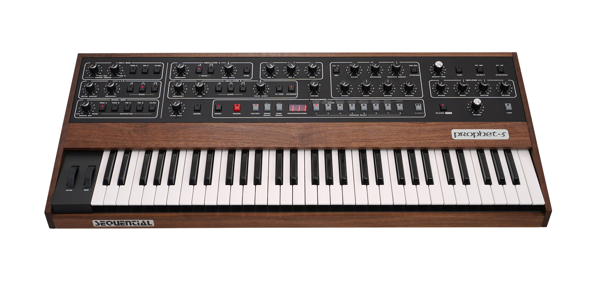

An analog (or analogue) synthesizer is a synthesizer that uses analog circuits and analog signals to generate sound electronically.
The earliest analog synthesizers in the 1920s and 1930s, such as the Trautonium, were built with a variety of vacuum-tube (thermionic valve) and electro-mechanical technologies. After the 1960s, analog synthesizers were built using operational amplifier (op-amp) integrated circuits, and used potentiometers (pots, or variable resistors) to adjust the sound parameters. Analog synthesizers also use low-pass filters and high-pass filters to modify the sound. While 1960s-era analog synthesizers such as the Moog used a number of independent electronic modules connected by patch cables, later analog synthesizers such as the Minimoog integrated them into single units, eliminating patch cords in favour of integrated signal routing systems.
